東京・輕井澤・鎌倉・江之島
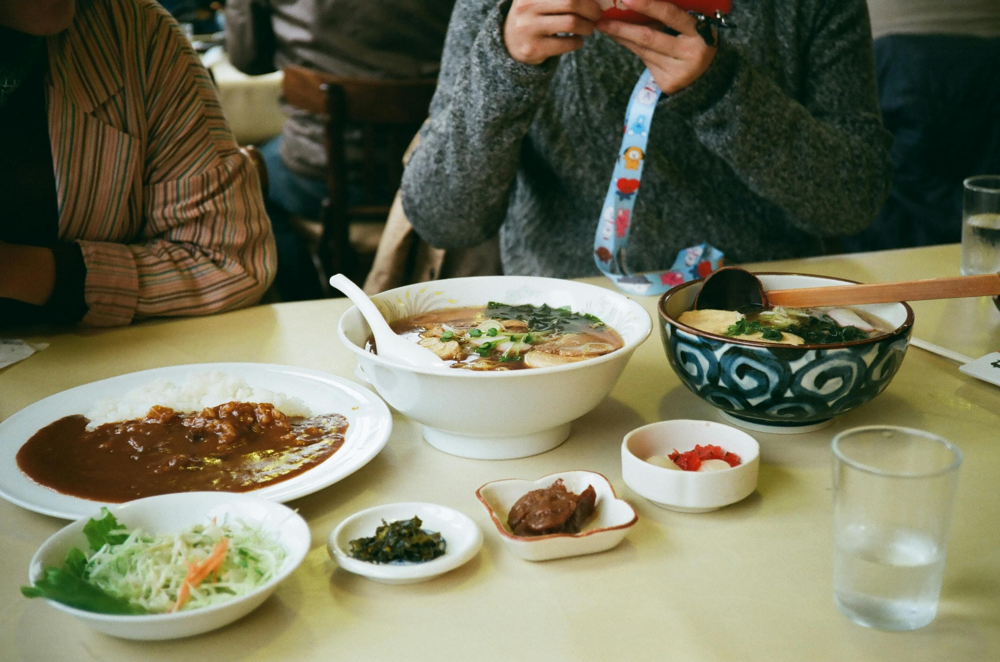
| 店名 | 類型 | 特色 |
|---|---|---|
| 寿司大（アメ横） | 握壽司 | 阿美橫丁旁，新鮮時令 |
| 牛かつ もと村 | 炸牛排 | 罕見炸牛排定食，外酥內嫩 |
| 上野精養軒 | 西式洋食 | 明治時代老舖，公園內景觀 |
| 鳥勝（御徒町） | 雞肉串燒 | 超值午間烤雞套餐 |
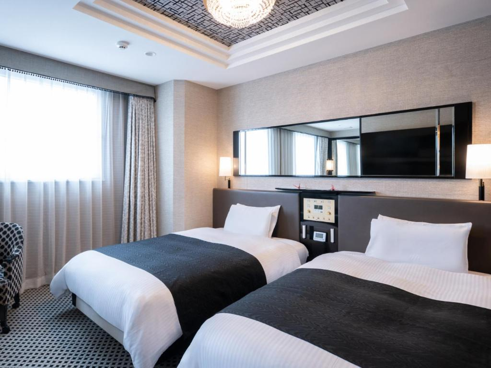
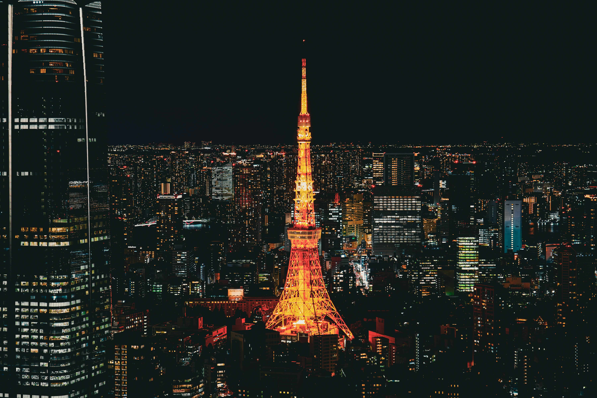
| 店名 | 類型 | 特色 |
|---|---|---|
| ロウリーズ・ザ・プライムリブ | 牛肋排 | 芝公園，東京鐵塔景觀餐廳 |
| 麻布十番 更科堀井 | 蕎麥麵 | 三百年老舖，高雅氛圍 |
| 御徒町 吉池食堂 | 海鮮 | 上野附近，超新鮮海鮮定食 |
| 上野 韓国苑 | 韓式燒肉 | 大口吃肉好選擇 |
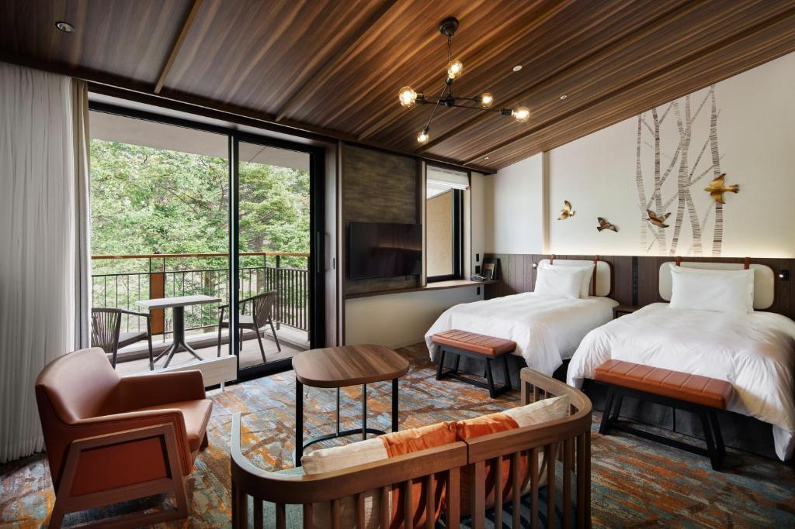
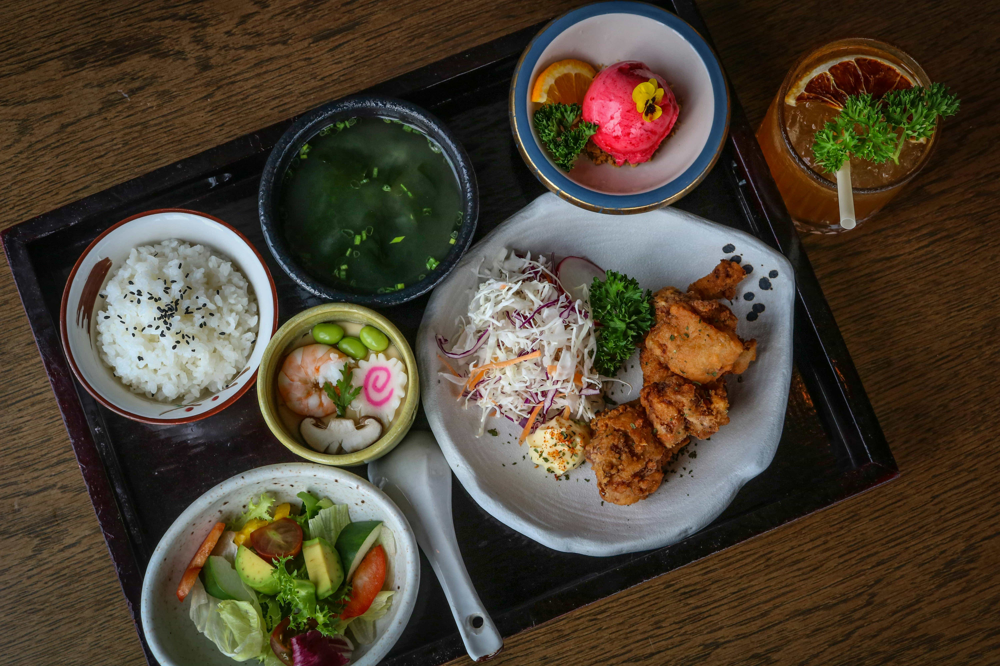
| 店名 | 類型 | 特色 |
|---|---|---|
| 村民食堂 | 農家定食 | 高原野菜套餐，在地風味 |
| 川上庵 | 蕎麥麵 | 舊輕銀座旁，石臼現磨 |
| Saku Pizza | 窯烤披薩 | 榆樹街小鎮內 |
| Boulangerie Asanoya | 麵包咖啡 | 百年老舖 |
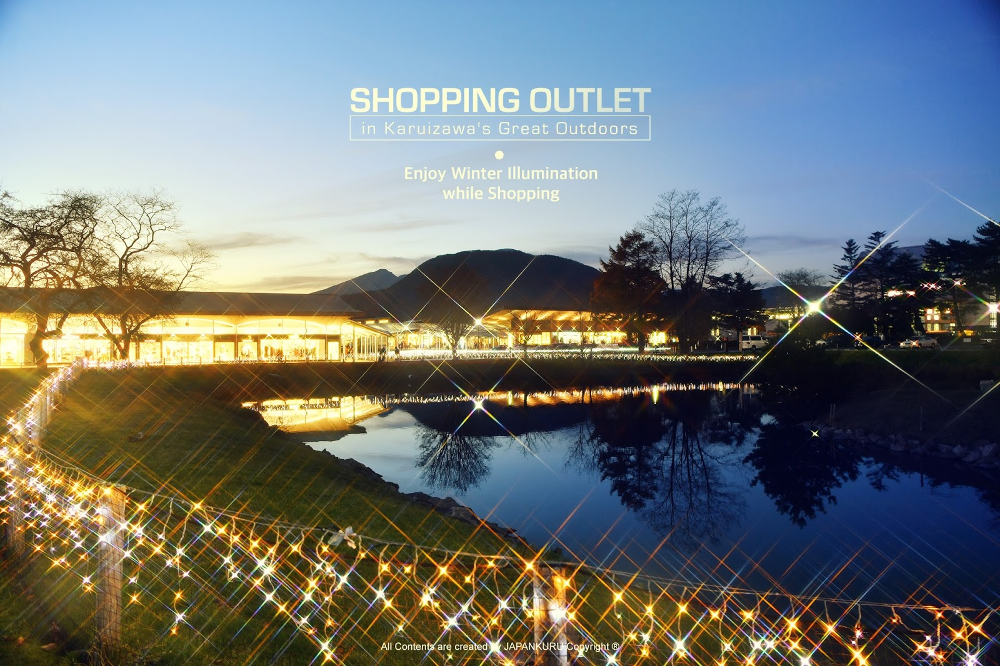
| 店名 | 類型 | 特色 |
|---|---|---|
| 王子飯店 The Buffet | 自助餐 | 飯店內，信州食材自助晚餐 |
| 軽井沢倶楽部 離山房 | 法式懷石 | 信州食材創意料理，需預約 |
| ピッツェリア サリー | 義式料理 | 舊輕銀座附近，窯烤披薩 |
| 中国料理 桃李 | 中式料理 | 王子飯店內，精緻中菜 |
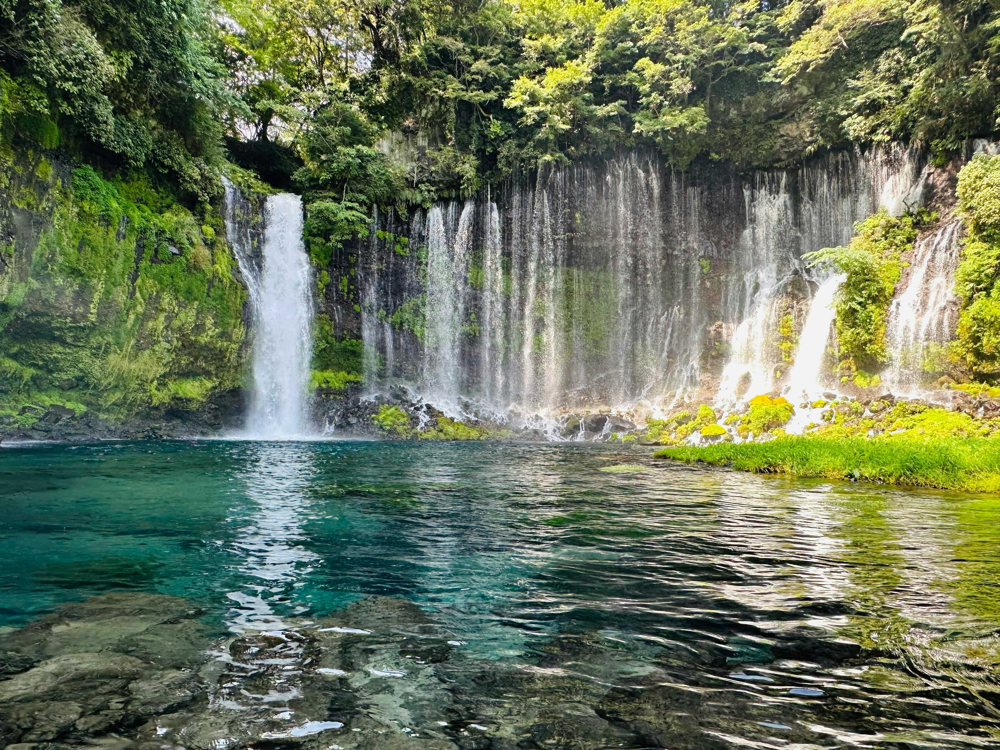
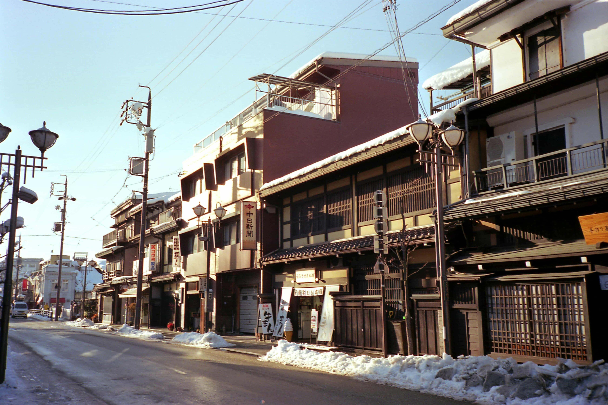
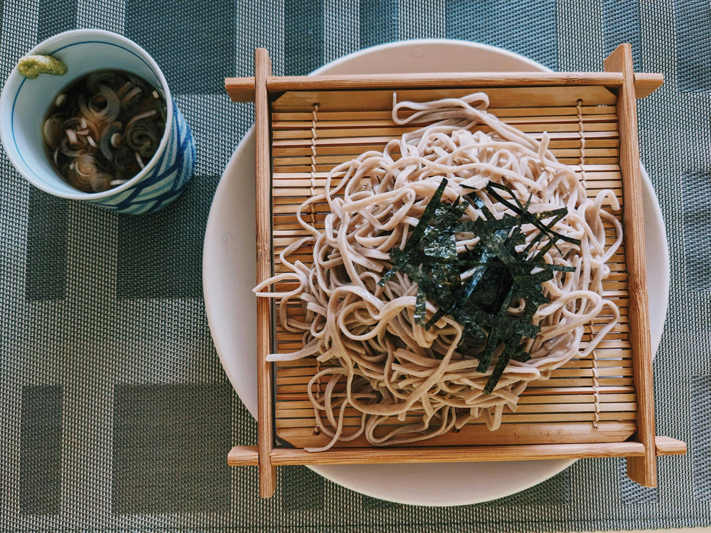
| 店名 | 類型 | 特色 |
|---|---|---|
| 川上庵 本店 | 蕎麥麵 | 石臼手打蕎麥，舊輕必吃 |
| 腸詰屋 | 香腸 | 自製香腸現烤，邊走邊吃 |
| 軽井沢ブルワリー | 精釀啤酒 | 在地精釀搭輕食 |
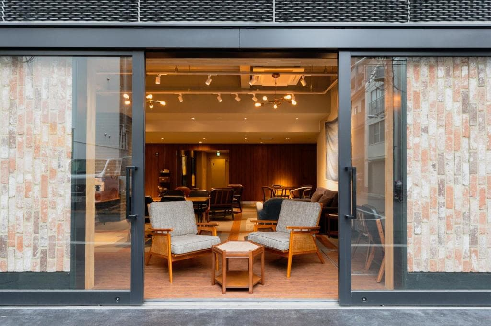
| 店名 | 類型 | 特色 |
|---|---|---|
| 駒形どぜう | 泥鰍鍋 | 淺草名物，江戶時代傳承老舖 |
| 浅草今半 | 壽喜燒 | 黑毛和牛壽喜燒，頂級享受 |
| 大黒屋天麩羅 | 天婦羅 | 百年天婦羅蕎麥老舖 |
| 神谷バー | 居酒屋 | 明治開業，「電気ブラン」名酒 |
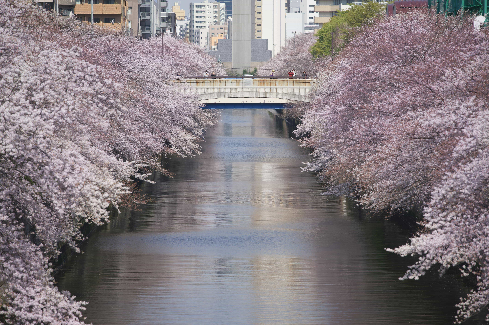
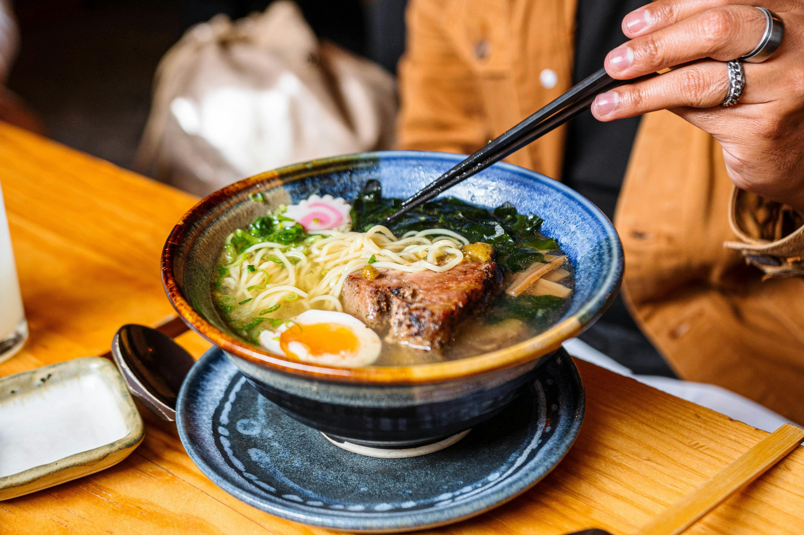
| 店名 | 類型 | 特色 |
|---|---|---|
| 蔦（つた） | 醬油拉麵 | 米其林一星 |
| Yakiniku Jumbo | 黑毛和牛 | 午間套餐超值 |
| 魚屋路 中目黒店 | 迴轉壽司 | 新鮮海產，CP值高 |
| 中目黑高架橋下 | 多元選擇 | 高架橋下美食街 |
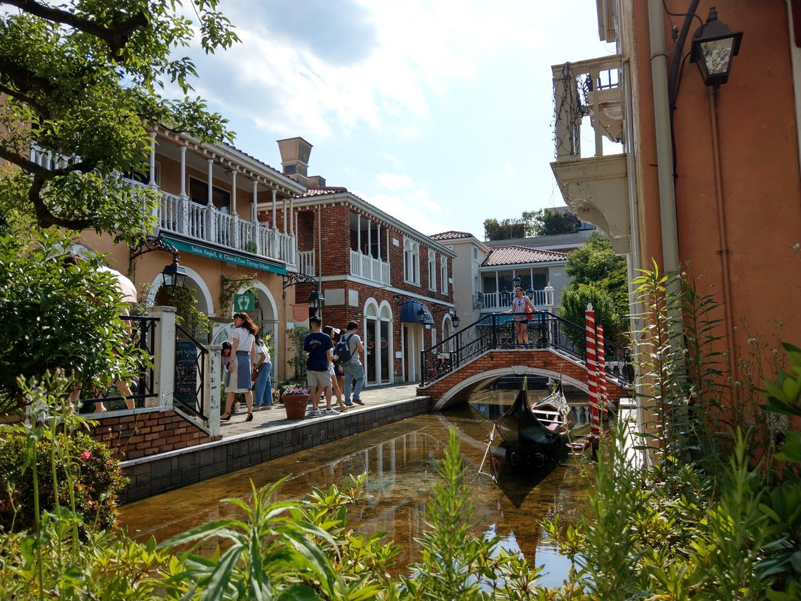
| 店名 | 類型 | 特色 |
|---|---|---|
| トラットリア・ダ・フィリッポ | 義大利料理 | LA VITA 旁，正統義式 |
| Mont St. Clair | 法式甜點 | 辻口博啟名店，晚間輕食 |
| 鳥良 自由が丘店 | 雞肉串燒 | 備長炭串燒居酒屋 |
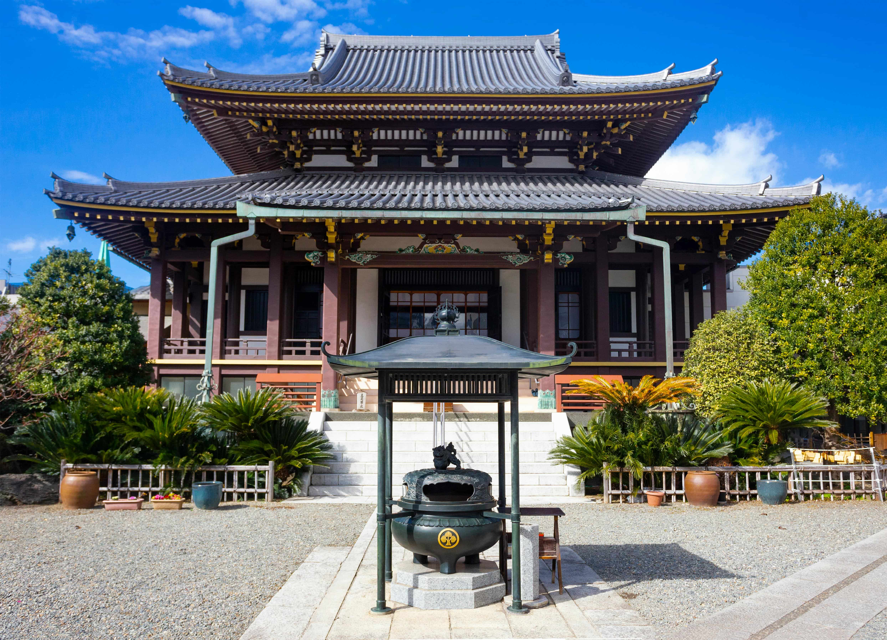
| 店名 | 類型 | 特色 |
|---|---|---|
| いとこ 鎌倉本店 | 海膽親子丼 | 名物丼飯，小町通步行 3 分 |
| 篤姫 鎌倉本店 | 蕎麥麵 | 若宮大路旁，石臼手打 |
| 鎌倉パスタ | 和風義大利麵 | 平價好吃 |
| 豊島屋 本店 | 咖啡輕食 | 鴿子餅乾老舖，附設咖啡廳 |
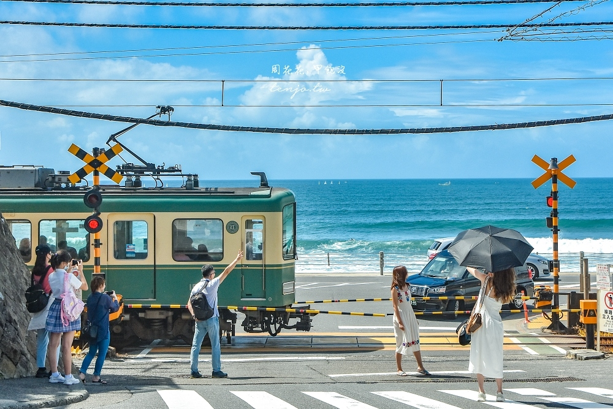
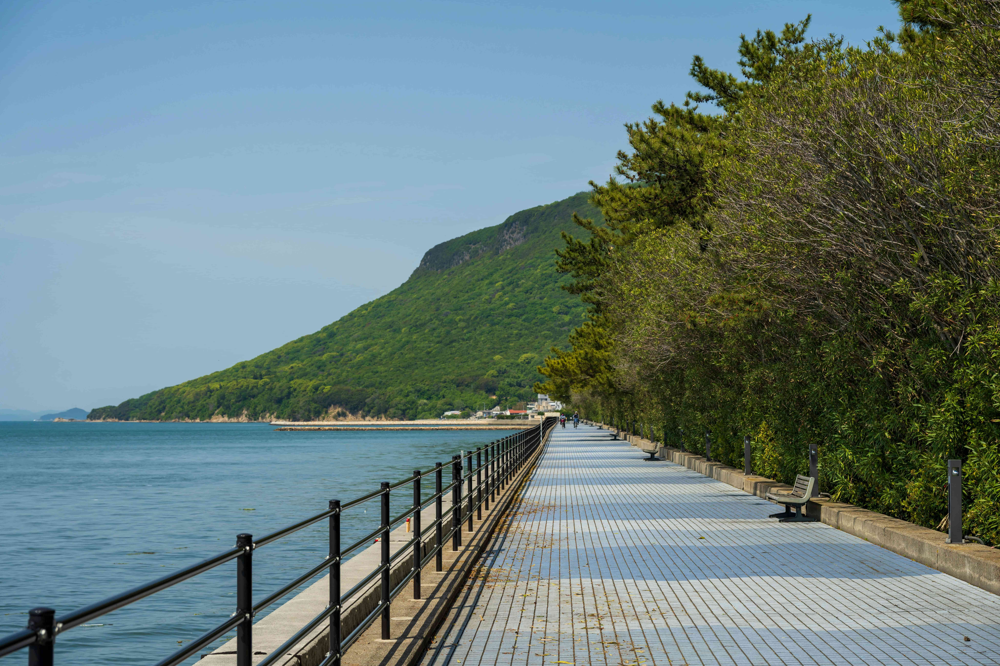
| 店名 | 類型 | 特色 |
|---|---|---|
| とびっちょ 本店 | 生海膽丼 | 江之島最知名，甜蝦・海膽頂配 |
| 魚見亭 | 海鮮定食 | 岩屋洞窟旁，絕景海景座位 |
| 貝作 えのしまビール | 烤海鮮 | 在地啤酒，露天席位賞夕陽 |